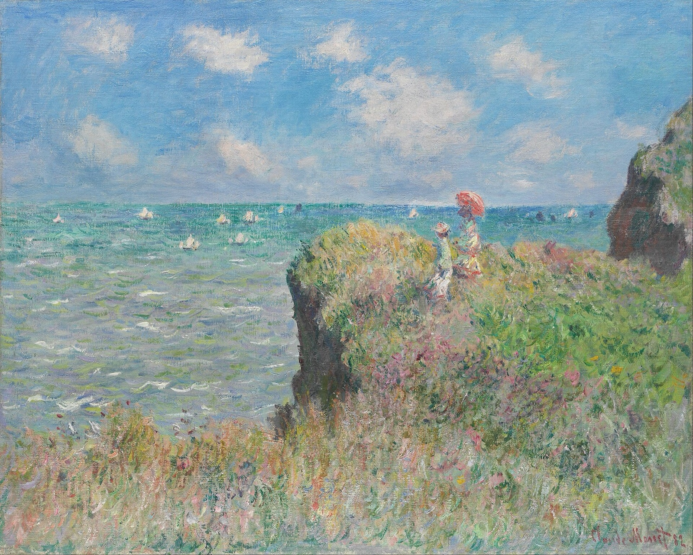
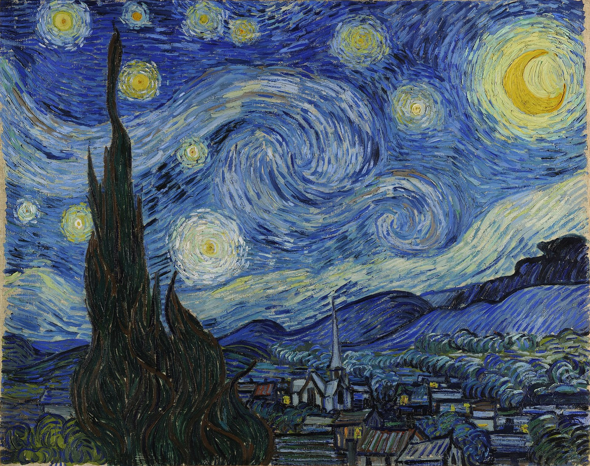
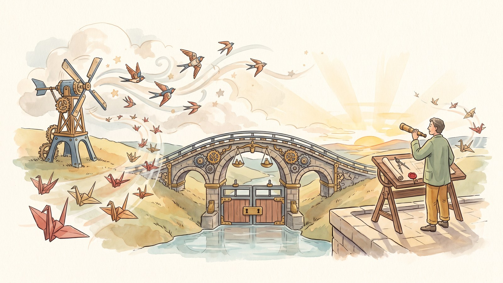

配置“配置者”：从土地、资本到智能编排社会

从土地、商路、工厂、大公司到金融市场与平台，历史总在重复同一个动作：把上一代的主角降格成下一代系统里的普通要素。顺着万字长文《从土地、资本到智能》的底子做一次减法，看 AGI 如何从拆解职业、商品化组织一路走到配置“配置者”，智能变便宜之后哪四样东西反而更贵，以及从“你在哪工作”走向“你拥有什么”的未定终局。
阅读全文 →关于 AI、系统演进与创造方式的思考记录。
从土地、商路、工厂、大公司到金融市场与平台，历史总在重复同一个动作：把上一代的主角降格成下一代系统里的普通要素。顺着万字长文《从土地、资本到智能》的底子做一次减法，看 AGI 如何从拆解职业、商品化组织一路走到配置“配置者”，智能变便宜之后哪四样东西反而更贵，以及从“你在哪工作”走向“你拥有什么”的未定终局。
阅读全文 →
同样对着 AI 许愿编程，第一天都能做出像样的页面，过半个月质量却拉开一大截。写给非技术同事的 8 个朴素习惯：留存档与分草稿桌、认清数据副本与主版本、明说版本阶段、舍得烧 Token 主动梳理、搭自动验证与异源对抗、建立日常 Ops 巡检、Think Big 而 Build from Small，以及先想清楚究竟要做什么。
阅读全文 →
从曹冲称象与一张普通的水果小票出发，沿着量纲约分、坐标本质、尺子刻度为什么会变密、余弦定理双算法证明、余弦相似度与皮尔逊相关系数，一路讲透矩阵乘法与神经网络底层同一个动作：拿一个向量，去量另一个。
阅读全文 →
当一台天生擅长通关所有有限游戏的机器坐上牌桌，重读詹姆斯·卡斯四十年前的《有限与无限的游戏》：大师级玩家的反讽、头衔折旧与意外的反转，以及 AGI 前夜把机器带进花园的实用主义。
阅读全文 →
从 OpenAI 公开的困惑度曲线和“0.618”这个小插曲出发，沿着“压缩即智能”这条线往下想：一座高度压缩的数据库为何能长出面对未知的泛化能力，压缩本身又在哪两处撞上边界，以及这最终指向的智能本质。
阅读全文 →
从 DeepSeek 与 FlashAttention 算子被揪出躲过一万七千次测试的漏洞说起，聊清楚形式化验证到底怎么用数学给概率兜底、为什么在 AI 时代反转成基础设施、最危险的“自证循环”陷阱在哪，以及拿监控与归因项目随手一问就能挖出的确定性骨架。
阅读全文 →
模型长出手脚后，为什么“万能对话框”裂解成了 Coding、办公、Personal、Team、业务域与 AI 数字员工六类并存形态？沿着能反悔与不能反悔、我与我们、流动的人与常驻业务、工具帮手与担责同事四道现实边界，讲清概率推演、工程规则与人类责任如何各归其位。
阅读全文 →单模型跑到底太烧额度，按请求硬切的 Model Router 脆而不可控，按 Subagent 切模型又隔着一层有损摘要。对比四条路线，拆解 Antigravity Orchestrator 如何保留同一条会话轨迹，靠宿主三态状态机、显式计划与工具门禁调度快慢模型，以及 Prompt Cache 7 轮实测账本与自研落地要点。
阅读全文 →多 Agent 解决的是空间分工，Loop 解决的是时间连续性。从“模型说完一句就停笔”的两类真实卡壳出发，梳理 Claude Code 的 Stop 门禁、/ralph-loop、固定 Cron 与自调节 /loop 具体是怎么做的，有哪些实战大坑，以及日常怎么选。
阅读全文 →多 Agent 协同不是为了让 AI 看起来更热闹，而是为了对抗上下文熵增与同源盲区。沿着 Antigravity 的真实迭代路径，从单兵 ReAct 起步，一路拆解 Subagents、/boost、先立制度的 /teamwork，直到把金字塔拍平的 /swarm。
阅读全文 →
二十年前《世界是平的》打通的只是信息与连接的管道；站在 2026 年的今天，从微软与谷歌的自愿买断、漫过软硬件的许愿编程、逆向一切黑盒的 REA，直到被递归自我改进（RSI）淹没的 Taste，从想法到现实之间的一切中间层正在被彻底抹平。
阅读全文 →
在模型能力每隔几周就会跃升一次的时代，单靠许大愿极易引发系统爆炸。我们需要用高度、深度和广度打开想象力去 Think Big，同时用边界极窄的大积木与微雕刻，像组装一台光刻机一样稳住脚步，去 Build from Small。
阅读全文 →